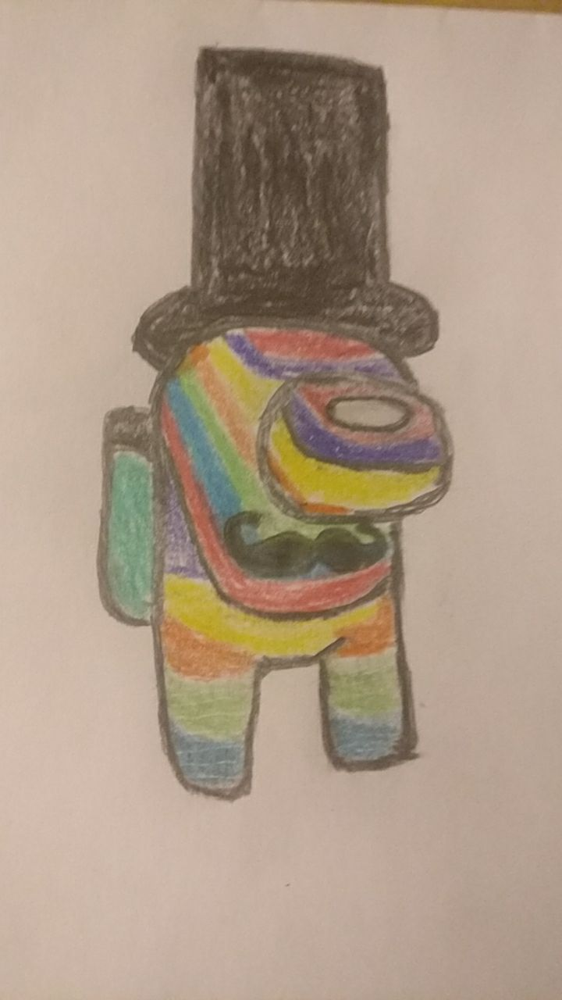

Home page
About me
digital design
tbd
Jonny v artifacts in digital design
The first artifact

This was made in pixel art style to show by far the best flavor of ice cream no doubt about that.
The Second artifact

This was made to show the best 5 items of this world a lock,cheese,bread,taco, and more importantly Duck
The third artifact

Inspired by keith haring and his art style of his animated imagery to show the great character he did but mixed together from different pieces
The fourth artifact

This is a recreation, one on one of a city Perfectly copying exactly what a city looks like
The fifth artifact

This was made to show my best work something that will never be forgotten once its seen it showing the great colors and lines and even the greatest hat ever made.
The sixth artifact

just some Recreation of my old shoes nothing special just there to show how far i have come since making the perfect 5th artifact